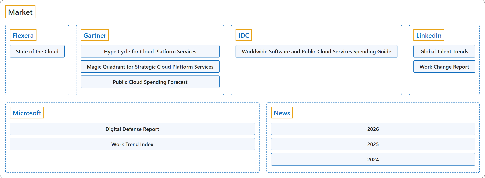

Market
Classification

Glossary
| Term | Definition | 中文翻译 | Source |
|---|---|---|---|
| Market 市场 |
"the business or trade in a particular product, including financial products" | 某一产品（包括金融产品）的生意或交易 | Cambridge University Press & Assessment, n.d., "market" noun (BUYING AND SELLING), definition 2 |
| Flexera Flexera |
"We are the industry leader in hybrid IT asset management (ITAM) and FinOps, with the numbers to back it up." | 我们是混合 IT 资产管理（ITAM）和 FinOps 领域的行业领导者，并有数据作证。 | Flexera, n.d., "The intelligence to make better decisions, the data to bring teams together" section, para. 1 |
| Gartner 高德纳 |
"We deliver actionable, objective business and technology insights." | 我们提供可付诸行动、客观的商业与技术洞察。 | Gartner, n.d., opening heading |
| IDC 国际数据公司 |
"Building a world where the most trusted technology intelligence makes everyone better at what they do." | 建设一个让最值得信赖的技术情报使每个人都更擅长自己工作的世界。 | IDC, n.d., "We are the tech intelligence layer of the AI economy" section, para. 1 |
| LinkedIn 领英 |
"Welcome to LinkedIn, the world's largest professional network with more than 1 billion members" | 欢迎来到 LinkedIn，全球最大的职业社交网络，拥有超过 10 亿会员。 | LinkedIn, n.d., "About LinkedIn" section, para. 1 |
| Microsoft 微软 |
"Microsoft's mission is to empower every person and every organization on the planet to achieve more." | 微软的使命是予力全球每一人、每一组织，成就不凡。 | Microsoft, n.d., para. 1 |
| University Rankings 大学排名 |
"(context) the position or level something or someone has in a list that compares their importance, quality, success, etc." | （语境）某事物或某人所处的位置或级别，处在一份比较其重要性、质量、成功程度等的列表中 | Cambridge University Press & Assessment, n.d., "ranking" noun, Business English |
| College Rankings 学院排名 |
"(context) the position or level something or someone has in a list that compares their importance, quality, success, etc." | （语境）某事物或某人所处的位置或级别，处在一份比较其重要性、质量、成功程度等的列表中 | Cambridge University Press & Assessment, n.d., "ranking" noun, Business English |
| School Rankings 中小学排名 |
"(context) the position or level something or someone has in a list that compares their importance, quality, success, etc." | （语境）某事物或某人所处的位置或级别，处在一份比较其重要性、质量、成功程度等的列表中 | Cambridge University Press & Assessment, n.d., "ranking" noun, Business English |
| Graduate Outcomes 毕业生结果 |
"(context) Each year, Statistics Canada releases data on the labour market outcomes of college and university graduates using data from the Education and Labour Market Longitudinal Platform (ELMLP)." | （语境）加拿大统计局每年利用教育与劳动力市场纵向平台（ELMLP）的数据，发布学院和大学毕业生的劳动力市场结果。 | Statistics Canada, 2026, "1 Introduction", para. 1 |
| News 新闻 |
"information or reports about recent events" | 关于近期事件的信息或报道 | Cambridge University Press & Assessment, n.d., "news" noun, definition 1 |
References
Cambridge University Press & Assessment. (n.d.). Market. In Cambridge Dictionary. Retrieved November 3, 2026, from https://dictionary.cambridge.org/dictionary/english/market
Cambridge University Press & Assessment. (n.d.). News. In Cambridge Dictionary. Retrieved November 3, 2026, from https://dictionary.cambridge.org/dictionary/english/news
Cambridge University Press & Assessment. (n.d.). Ranking. In Cambridge Dictionary. Retrieved November 6, 2026, from https://dictionary.cambridge.org/dictionary/english/ranking
Flexera. (n.d.). About us. Retrieved November 3, 2026, from https://www.flexera.com/about-us
Gartner. (n.d.). About Gartner: Company information & leadership. Retrieved November 3, 2026, from https://www.gartner.com/en/about
IDC. (n.d.). About IDC. Retrieved November 3, 2026, from https://www.idc.com/about/
LinkedIn. (n.d.). About LinkedIn. Retrieved November 3, 2026, from https://about.linkedin.com/
Microsoft. (n.d.). About Microsoft. Retrieved November 3, 2026, from https://www.microsoft.com/en-us/about
Red River College Polytechnic. (n.d.). List of programs for international students. Retrieved November 8, 2026, from https://www.rrc.ca/international/study-at-rrc/
Statistics Canada. (2026, June 24). Technical reference guides for the Education and Labour Market Longitudinal Platform (ELMLP): Labour market outcome indicators of postsecondary graduates, 2010 to 2022 (Catalogue no. 37-20-0001). https://www150.statcan.gc.ca/n1/pub/37-20-0001/372000012026001-eng.htm